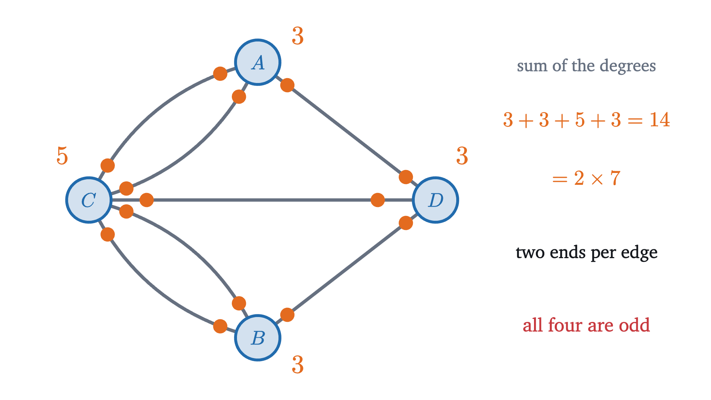
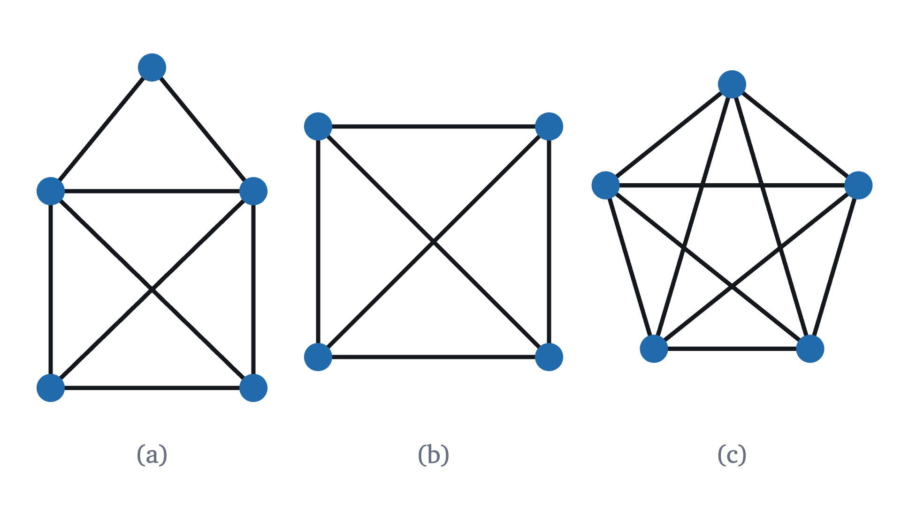
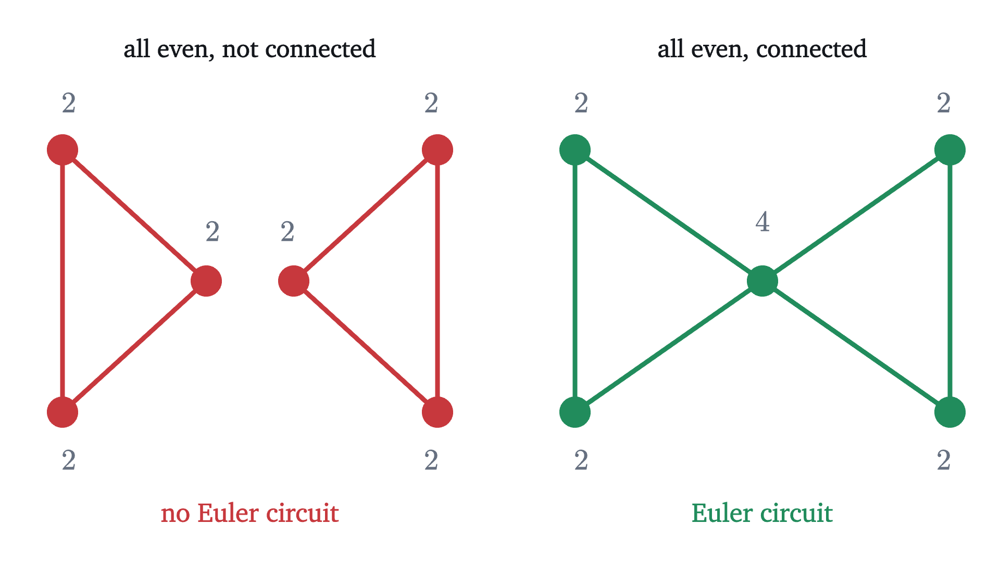

Bridges of Königsberg: Euler paths and circuits
Seven bridges and a walk that nobody could find. Counting the edges at each vertex proves it cannot exist and settles every draw-without-lifting puzzle.
The city of Königsberg stood on a river with an island in the middle, and in the 1730s seven bridges joined the island, the two banks and the land to the east, as on the map above. The townspeople had a puzzle about them. Plan a walk that crosses every bridge exactly once. You may start wherever you like and finish wherever you like, but no bridge may be skipped and none may be crossed twice.
The walker in the animation starts on the north bank and does well for a while. After six bridges every bridge that touches the eastern land has been used, the walker is standing on it, and one bridge on the far side of the map has not been crossed.
Pause and try
Copy the map and try for yourself, with a different starting point and different choices. What is the largest number of bridges you can cross before you are stuck?
Show answerHide answer
Six is the most that anyone manages, and many attempts stop at five. For instance, calling the north bank $A$, the south bank $B$, the island $C$ and the eastern land $D$, the walk $A, C, B, D, C, A, D$ crosses six bridges and leaves one of the bridges between $B$ and $C$ unused.
Failing many times does not show that the task is impossible, because a clever route might be hiding among the thousands not yet tried. The people of Königsberg suspected there was no such walk and could not say why. In 1736 Leonhard Euler could, and the idea he used is usually counted as the first theorem of a subject called graph theory.
Throwing away the map
Most of the map has nothing to do with the puzzle. The lengths of the bridges and the shape of the island can change without changing which walks are possible. The only facts that matter are which pieces of land there are and which bridges join which. So shrink each piece of land to a dot and stretch each bridge into a line between two dots.
A picture of this kind is called a graph.
In the Königsberg graph the vertices are $A$, $B$, $C$, $D$ and the edges are the seven bridges. Two edges join $A$ to $C$ and two join $B$ to $C$, which is why the definition allows repeated edges. The puzzle now reads: trace along the edges, from vertex to vertex, so that every edge is traced exactly once.
On the graph it is easy to run several attempts and compare them.
Why an odd vertex is trouble
Look at where the three attempts died. Twice the walker was stranded at $D$, a vertex with three edges, and once at $C$, a vertex with five. To see why that keeps happening, forget the rest of the graph and watch a single vertex while a walk passes through it.
Each visit to a vertex consumes two of its edges, one coming in and one going out. To build a proof on that we need names for the kinds of route.
The Königsberg puzzle asks for an Euler trail. The stricter version, in which you must also finish where you started, asks for an Euler circuit.
Now count the edges at each vertex of the Königsberg graph.

The degrees are 3, 3, 5 and 3. An Euler circuit would need all four to be even, and an Euler trail that is not closed would need exactly two to be odd. Königsberg has four odd vertices, so it has neither. The puzzle has no solution, and we know it without examining a single route.
The handshake lemma
Could a town be built with exactly one odd vertex? Or three? The figure above suggests a constraint: the degrees added up to 14, which is twice the number of bridges.
Pause and try
Draw any graph you like, with five or six vertices, and add up its degrees. Compare with the number of edges. Then explain what you see.
Show answerHide answer
The sum is always twice the number of edges. Each edge has two ends, and the degree of a vertex counts the edge ends that sit at it. Adding the degrees therefore counts every edge end once, which counts every edge twice.
The name comes from parties, with guests as vertices and handshakes as edges. For us it means that the possible counts of odd vertices are 0, 2, 4 and so on. Zero and two are the cases the necessity theorem leaves open.
Pause and try
Each of the three figures below is to be drawn with one stroke of the pen, without lifting it and without going over any line twice. In each figure a crossing of two lines in the middle is not a vertex. Count degrees and predict: which figures are impossible? For the others, where would you have to start?
Show answerHide answer
(a) The two bottom corners have degree 3, the two upper corners have degree 4 and the top has degree 2. With exactly two odd vertices a closed tour is impossible, and an open one would have to start at one bottom corner and end at the other. (b) All four corners have degree 3, so it is impossible. (c) All five vertices have degree 4, so nothing we have proved forbids it. Whether figures (a) and (c) can in fact be drawn is the next question.

Even degrees are enough, in a connected graph
So far the theorem only forbids. It says that odd vertices spoil a tour, and it does not say that a graph without odd vertices has one. In fact there is one more way to fail.

A graph with an Euler trail and no vertices of degree 0 is certainly connected, since the trail itself visits every vertex. The surprise is that connectedness and even degrees together are sufficient. To find out why, take a connected graph with all degrees even and try the most naive plan: start somewhere and keep walking along unused edges until you cannot.
Pause and try
The graph in the next figure is a triangle with its three midpoints joined. Starting at the corner $P$, a walker goes around the outside, $P, U, Q, V, R, W, P$, and is stuck at $P$ with three edges untraced. Before stepping through the figure, find a way to enlarge this circuit so that it takes in the three missing edges.
Show answerHide answer
The missing edges form the small triangle $U, V, W, U$, which is itself a circuit, and it touches the big circuit at $U$. On reaching $U$ for the first time, go around the small triangle and return to $U$, then carry on as before: $P, U, V, W, U, Q, V, R, W, P$. All nine edges are used once each.
Two things happened in that figure, and each needs a reason. The walker got stuck only at the starting vertex, which is the in and out count again. And the leftover edges touched the circuit somewhere, which is where connectedness is used.
Euler proved the “only if” halves and stated the rest. The first published proof of the “if” halves is due to Carl Hierholzer, and it is the splicing argument. The “only if” halves are the necessity theorem above, so what remains is to construct the tours. We start with part 1.
Compare the proof with the figure. Step 1 is the walker returning to $P$. The walk from $c$ to $x$ is how we know the leftover triangle must touch the first circuit, and for the two separate triangles no such walk exists, which is exactly where the proof breaks for them.
Two odd vertices: an open trail
Part 2 follows from part 1 by a trick worth remembering: change the problem into one already solved. Take figure (a), the house, whose two bottom corners are odd.
So figure (a) can be drawn, from one bottom corner to the other and in no other way. Figure (c) is connected with all degrees 4, so it has an Euler circuit starting anywhere. Numbering its vertices 1 to 5 around the pentagon, one such circuit is $1, 2, 3, 4, 5, 1, 3, 5, 2, 4, 1$: the outside first, then the star.
Worked examples
Common mistakes
Stepping back
The hard part of the Königsberg puzzle was that the number of possible routes is large and trying them teaches nothing. Euler’s move was to stop looking at routes and look at one vertex at a time, where a route has to pair off the edges. That turned a search into a count. The same count now decides the question for any map, any pen-and-paper figure and a set of dominoes.
Proving that something cannot be done by finding a quantity that every attempt must respect, here the parity of a degree, is a method you will meet again. The pigeonhole principle is another example of a count that forces a conclusion. Part 1 can also be proved by induction on the number of edges: remove a circuit and apply the hypothesis to the pieces that remain.
Check yourself
A connected graph has six vertices, with degrees 2, 2, 3, 3, 4, 4. What can you conclude?
Problems
Problems 1 to 3 apply the theorem directly. Problems 4 and 5 combine it with other counts. Problems 6 and 7 extend the lesson.
Problem 1
A graph has vertices $a, b, c, d, e, f$ and edges $ab, bc, cd, de, ef, fa, ac, ce, ea$. Find the degree of each vertex, check the handshake lemma, and decide whether the graph has an Euler circuit. If it does, write one down.
Show solutionHide solution
Counting appearances in the list: $a$ is in $ab, fa, ac, ea$, so $\deg(a) = 4$. Likewise $\deg(c) = 4$ (from $bc, cd, ac, ce$) and $\deg(e) = 4$ (from $de, ef, ce, ea$), while $b$, $d$ and $f$ have degree 2. The sum is $4 + 4 + 4 + 2 + 2 + 2 = 18 = 2 \times 9$. The graph is connected, since $ab, bc, cd, de, ef$ link all six vertices, and every degree is even, so there is an Euler circuit. Going around the hexagon and then the triangle: $a, b, c, d, e, f, a, c, e, a$. This uses $ab, bc, cd, de, ef, fa, ac, ce, ea$, all nine edges.
Problem 2
Two of the seven bridges were destroyed in the Second World War and others were rebuilt, and by the usual account five bridges now stand on the old sites: one from each bank to the island $C$, one from each bank to the eastern land $D$, and one between $C$ and $D$. Is the walk possible today? Where can it start?
Show solutionHide solution
The edges are $AC, BC, AD, BD, CD$. The degrees are $\deg(A) = 2$, $\deg(B) = 2$, $\deg(C) = 3$, $\deg(D) = 3$, with sum $10 = 2 \times 5$. The graph is connected and exactly two vertices are odd, so by part 2 there is an Euler trail, and it must start at $C$ or $D$ and end at the other. One such walk is $C, A, D, B, C, D$. A walk that returns to its starting point is still impossible.
Problem 3
Go back to the original seven bridges. What is the smallest number of new bridges the town would have had to build to make possible (a) a walk crossing every bridge once, (b) such a walk that also returns to its start?
Show solutionHide solution
All four vertices are odd. A new bridge raises the degree of each of its two ends by one, so it changes the parity of exactly two vertices. (a) We need at most two odd vertices. Zero new bridges leave four, so at least one is needed, and one is enough: a bridge from $A$ to $B$ makes the degrees 4, 4, 5, 3, and the walk then runs between $C$ and $D$. (b) We need all four vertices to become even. One bridge changes only two parities, so at least two bridges are needed. Two are enough: bridges from $A$ to $B$ and from $C$ to $D$ give degrees 4, 4, 6, 4, all even, and the graph is still connected.
Problem 4
The complete graph $K_n$ has $n$ vertices and exactly one edge between every two of them. For which $n \ge 2$ does $K_n$ have an Euler circuit? For which $n$ does it have an Euler trail that is not closed?
Show solutionHide solution
$K_n$ is connected, and each vertex is joined to the other $n - 1$, so every degree is $n - 1$. There is an Euler circuit exactly when $n - 1$ is even, that is, when $n$ is odd (for instance $K_5$, figure (c) of the lesson). When $n$ is even all $n$ vertices are odd, and an open Euler trail needs exactly two odd vertices, which happens only for $n = 2$. Indeed $K_2$ is a single edge, which is its own Euler trail, while $K_4$, figure (b), has four odd vertices and no Euler trail.
Problem 5
(a) Nine people are in a room. Is it possible that each of them is friends with exactly three of the others? (Friendship is mutual.) (b) What if there are eight people?
Show solutionHide solution
(a) Make the people vertices and each friendship an edge. Every degree would be 3, so the sum of the degrees would be $9 \times 3 = 27$. By the handshake lemma the sum is twice the number of edges, which is even, and 27 is odd. So it is impossible. (b) The sum would be $8 \times 3 = 24$, so the lemma raises no objection, with 12 friendships. An example confirms it: put the eight people at the corners of a cube and let the 12 edges of the cube be the friendships. Each corner of a cube lies on exactly three edges.
Problem 6
A student claims: “In a connected graph with all degrees even, start anywhere and keep walking along unused edges. You can only get stuck at your starting vertex, so when you stop you have an Euler circuit.” Show by an example with six edges that this is wrong, and say which part of the claim is true.
Show solutionHide solution
Take two triangles that share one vertex $u$: the first has vertices $u, x, y$ and the second $u, s, t$. The degrees are 4 at $u$ and 2 elsewhere, and the graph is connected. Start at $x$ and walk $x, u, y, x$. Every step uses an unused edge, and the walker is now at $x$ with both edges at $x$ used, so the walk stops after 3 of the 6 edges. The true part is that the walk can only stop at its starting vertex (Step 1 of the proof). The false part is the conclusion that all edges have been used by then. The repair is the splice: the unused triangle $u, s, t, u$ is inserted when the walk first reaches $u$, giving $x, u, s, t, u, y, x$.
Problem 7
A connected graph has exactly $2k$ vertices of odd degree, where $k \ge 1$. Prove that its edges can be split among $k$ trails, with every edge on exactly one trail, and that fewer than $k$ trails never suffice. How many strokes of the pen does the Königsberg graph need?
Show solutionHide solution
$k$ trails suffice. Pair up the odd vertices as $x_1, y_1$, then $x_2, y_2$, up to $x_k, y_k$, and add a new edge joining each pair. Every odd degree goes up by one, so the enlarged graph has all degrees even, and it is still connected. By part 1 it has an Euler circuit. Delete the $k$ new edges from this circuit. They cut it into $k$ pieces, each a trail made of original edges. No piece is empty: two new edges never share an end, because the $2k$ odd vertices are all different, so two new edges are never consecutive on the circuit. Every original edge is on exactly one piece.
Fewer do not. Suppose the edges are split among some trails. Let $v$ be a vertex that is not the first or last vertex of any of them. Then each trail passes through $v$ using two edges at a time, as in the necessity proof, so $\deg(v)$ is even. Hence each of the $2k$ odd vertices is the first or last vertex of at least one trail. A trail has only two such positions, so there are at least $k$ trails.
Königsberg has four odd vertices, so $k = 2$: the seven bridges need two separate walks, for example $A, C, B, D, C, A, D$ (six bridges) and then the remaining bridge $B, C$.